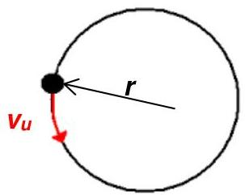
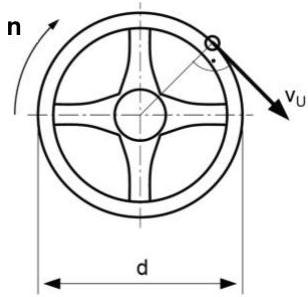
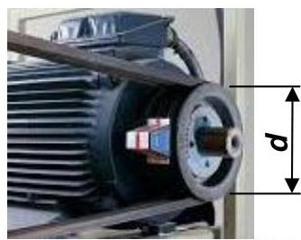
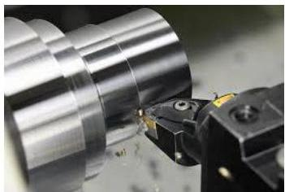

Skript-Bezug (Kapitel 5.3)




Grundlagen: Drehzahl n
Drehzahl ist "Umdrehungen pro Zeit". Skript-Formel:
Umfangsgeschwindigkeit vu (Kap. 5.3)
Kernaussage: (und umgestellt: , )
Einfache Übersetzung (Riemen/Riemenscheiben)
Bei gleicher Riemengeschwindigkeit gilt:
Schnittdaten-Rechner (Drehen)
In der Zerspanung nennt man die Geschwindigkeit am Umfang (mit Schneide) Schnittgeschwindigkeit vc. Für die Drehzahl gilt: (d in m, vc in m/min → n in 1/min).
Lookup-Tabelle (JSON) ansehen
Vertiefung (Zusatz): Rotationsdynamik
Dieser Teil ist eine praxisnahe Ergänzung (Spindel: Drehmoment/Leistung). Er ist nicht nötig, um die Skript-Aufgaben zu lösen.
Zusatz öffnen
(n in 1/s) und
Rotationsenergie (Beispiel Zylinder): ,
Übungen (5.3.1 + ausgewählte 5.4)
Tipp: Du darfst Einheiten mitschreiben (z.B. "240 1/min"). Entscheidend ist die Zahl.
Hinweis zur Qualität: In der Skript-OCR-Version ist bei Aufgabe 5* (Turmuhr) eine Zwischenzeile falsch (d ist 1800 mm, nicht "1/800"). Das Resultat bleibt 7,85 mm/min.